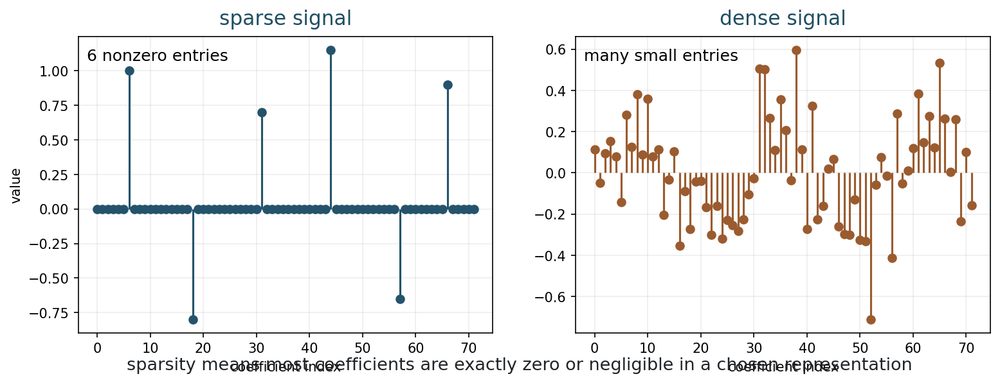
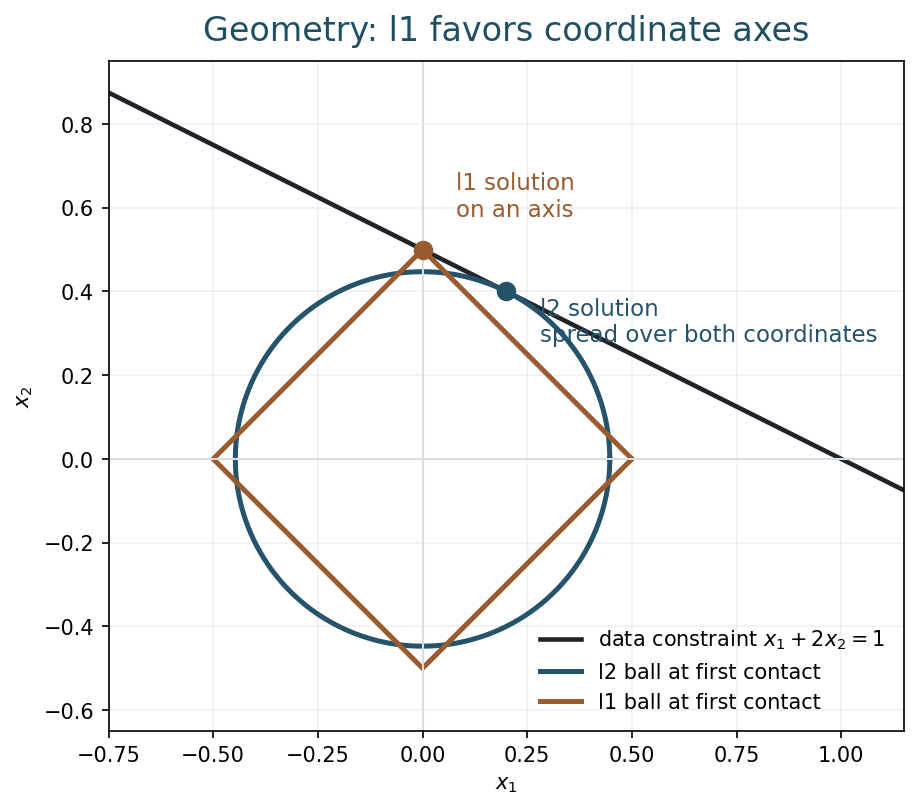
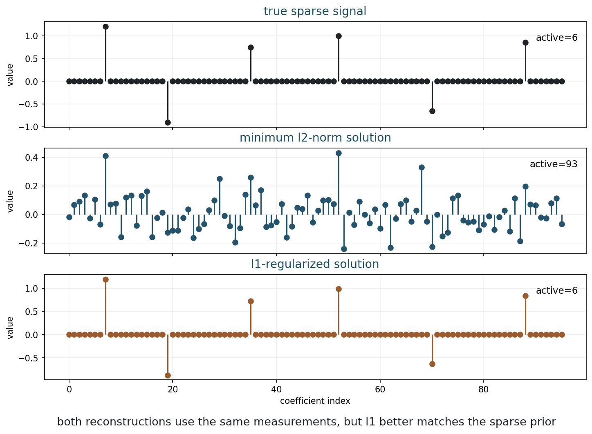
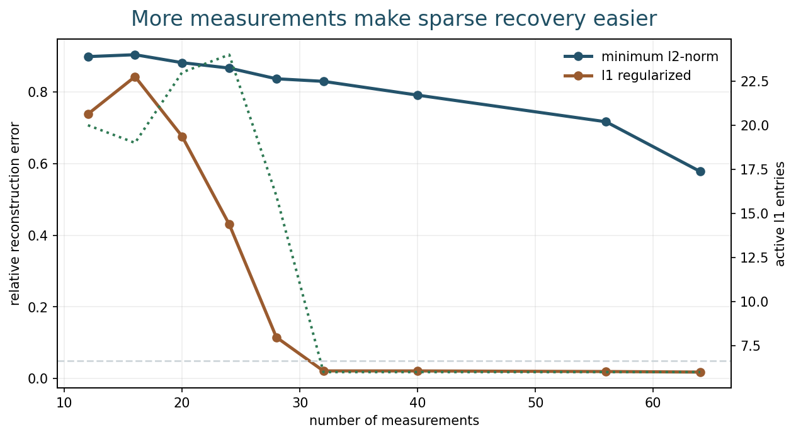
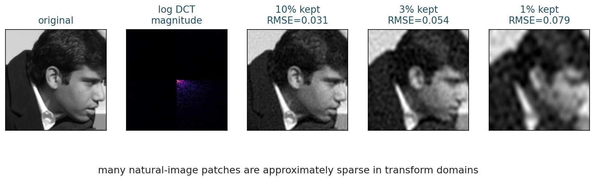
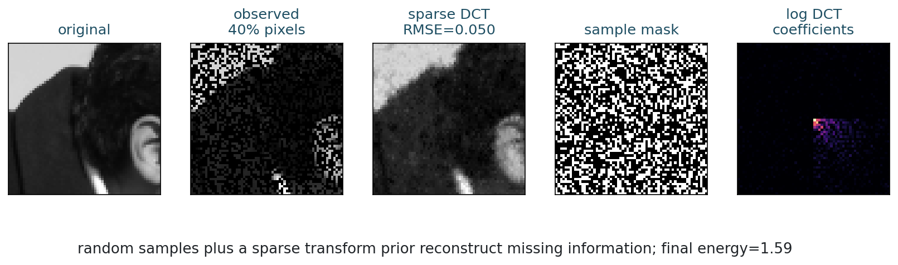

Sparse Reconstruction
Chapter 10
Slides | Notebook | Open in Colab
Learning Goals
By the end of this chapter, you should be able to:
- define sparsity in a basis or transform;
- compare l1 and l2 regularization;
- explain why l1 can recover sparse signals;
- describe compressed sensing intuition;
- use a sparse DCT prior for image reconstruction.
Sparsity As A Prior
Week 9 introduced ISTA:
x^{k+1} = S_{\tau\lambda} \left(x^k-\tau A^\top(Ax^k-y)\right).
The soft-thresholding step imposes a modeling assumption: many coefficients should be zero or nearly zero.
Why This Chapter Matters
The previous chapters introduced regularization as a way to stabilize inverse problems. Tikhonov prefers small energy. Total Variation prefers sparse gradients. Sparse reconstruction generalizes this idea: a signal or image may be simple after the right representation is chosen.
This is an important turn in the course. We stop asking only whether an image is smooth and begin asking where its information is concentrated. If most of the meaningful structure can be described by a small number of coefficients, then incomplete measurements may be enough to reconstruct it.
This also prepares the path to neural networks. A neural network can be understood, partly, as learning a representation in which relevant image structure becomes easier to describe, separate, or reconstruct. Sparse reconstruction is a hand-designed predecessor of that idea.
A vector x\in\mathbb{R}^n is k-sparse if it has at most k nonzero entries:
\|x\|_0 = \#\{i:x_i\neq 0\}.
The notation \|\cdot\|_0 counts nonzeros; it is not a true norm.

Sparse vectors have only a few active coefficients; dense vectors spread information across many entries.
Sparsity is stronger than smallness. A vector can have small entries everywhere and still be dense. Sparse modeling says that most entries are exactly zero or negligible, and a relatively small set carries the important information.
In practice, exact sparsity is rare. Approximate sparsity is enough for many imaging methods: sorted coefficient magnitudes decay rapidly, so keeping the largest coefficients captures most visible structure.
Representation Matters
An image may not be sparse as pixels. It may be sparse, or approximately sparse, after a transform.
Common representations include:
- Fourier coefficients;
- DCT coefficients;
- wavelet coefficients;
- learned dictionaries;
- gradient domain.
Natural images often have many small transform coefficients and a few large ones. Sparse reconstruction does not require exact zeros everywhere; fast coefficient decay can be enough for useful approximation.
The phrase “the image is sparse” is incomplete unless we say in what representation. A photograph of a face is not sparse in pixels, because most pixels are nonzero. The same image may be compressible in DCT or wavelet coefficients because large smooth regions and edges can be represented with fewer important coefficients.
This distinction is central. The unknown may be an image x, but the sparse variable may be a coefficient vector c:
x = \Psi c,
where \Psi is a synthesis transform or basis. Sparse reconstruction then asks for a coefficient vector c with few significant entries.
Analysis And Synthesis Views
There are two common ways to use a transform.
In the synthesis view, the image is built from coefficients:
x=\Psi c.
The reconstruction problem may become
\min_c D(y,A\Psi c)+\lambda\|c\|_1.
In the analysis view, we penalize transformed coefficients of the image:
\min_x D(y,Ax)+\lambda\|\Psi x\|_1.
For orthogonal transforms these views can be closely related. For redundant transforms, learned dictionaries, or gradient penalties, they can behave differently. The important point is that sparsity is not a property of pixels alone; it is a property of pixels plus a representation.
l2 Regularization
Tikhonov-style regularization uses
\frac12\|Ax-y\|_2^2 + \frac{\lambda}{2}\|x\|_2^2.
The l2 penalty prefers small energy spread across coefficients. It is smooth and mathematically convenient, but it does not specifically ask for exact zeros.
When many vectors fit the data, l2 often chooses a dense small-norm solution.
l1 Regularization
Sparse reconstruction often uses
\frac12\|Ax-y\|_2^2+\lambda\|x\|_1,
where
\|x\|_1=\sum_i |x_i|.
The l1 penalty encourages exact zeros. It is convex but nonsmooth.
The ideal sparse model might be
\min_x \|x\|_0 \quad\text{subject to}\quad Ax=y.
This problem is combinatorial. The l1 norm is a convex relaxation that preserves much of the sparse behavior.
The word “relaxation” means that we replace a hard, discrete problem by a continuous one that is easier to optimize. The l0 problem asks which subset of coefficients should be active. The l1 problem avoids explicit subset search, while still encouraging many coefficients to become zero.
This is a remarkable compromise: l1 is convex, so it can be optimized reliably in many settings, but it still behaves like a sparsity prior.
Geometry Of l1 And l2

The corners of the l1 ball make sparse solutions more likely.
The l2 ball is round. The l1 ball has corners on coordinate axes. When a data constraint first touches an l1 ball, it often touches a corner, which means some coordinates are exactly zero.
This geometric picture matches the algorithmic picture from soft thresholding.
When students first see this figure, the key is to focus on the contact point. The data constraint represents all coefficient vectors that fit the measurement equally well. The regularizer chooses the smallest ball that touches that constraint. A round l2 ball has no preference for axes. The l1 diamond has corners on axes, so its contact points often remove coefficients.
The geometry is a picture of the prior.
Underdetermined Recovery
Suppose we observe
y=Ax,
where A has fewer rows than columns. If m<n, there are usually many possible solutions.
One classical choice is the minimum l2-norm solution:
\min_x \|x\|_2 \quad\text{subject to}\quad Ax=y.
This fits the data, but it may be dense.
The l1-regularized solution
\min_x \frac12\|Ax-y\|_2^2+\lambda\|x\|_1
balances data fit with sparse coefficients.

The same measurements can lead to very different reconstructions under different priors.
Both methods see the same A and y. The difference is the prior: l2 asks for a small vector, while l1 asks for a sparse explanation.
This is the recurring inverse-problem lesson. Data alone may be compatible with many answers. The regularizer chooses among them. Sparse reconstruction chooses the answer that can be explained using few active components.
This can be extremely powerful, but it can also be wrong. If the true image is not sparse in the chosen representation, the sparse answer may look artificial or may erase structure that matters.
Compressed Sensing Intuition
If x\in\mathbb{R}^{1000} is exactly 5-sparse, it is not truly a 1000-degree-of-freedom object. We need to learn which 5 locations are active and the 5 active values.
Sparse recovery can work with far fewer than n measurements, but not usually as few as k. We need enough measurements to identify support and amplitudes robustly.

l1 recovery can improve sharply once enough measurements are available.
Sparse recovery can fail even when the true signal is sparse. The representation must be appropriate, the measurement operator must mix information well, and the regularization weight must be chosen carefully.
The measurement operator matters because some measurements are more informative about sparse coefficients than others. Random measurements often behave well in theory because they mix information broadly. Structured measurements can be excellent or terrible depending on how they interact with the sparse basis.
For example, if the measurements miss exactly the locations where the sparse signal is active, recovery is impossible. If the measurement system confuses two sparse patterns, no regularizer can reliably distinguish them without additional information.
Compressed sensing is therefore not “recover anything from almost nothing.” It is a set of conditions under which sparse objects can be recovered from fewer measurements than classical intuition would suggest.
Sparse Images
For images, sparsity is usually transform-domain sparsity.
The Discrete Cosine Transform represents an image patch using cosine patterns. Many patches can be approximated using only a small fraction of DCT coefficients.

Few large transform coefficients can preserve much of the visual structure.
Suppose we observe only a random subset of pixels. We can reconstruct using sparse DCT coefficients by solving
\min_c \frac12\|M D^{-1}c-y\|_2^2+\lambda\|c\|_1.
Here D^{-1}c maps DCT coefficients back to an image, and M keeps the observed pixels.
This formula is worth reading slowly:
- c is the unknown sparse coefficient vector;
- D^{-1}c turns coefficients into an image;
- M simulates the pixels that were actually observed;
- M D^{-1}c-y is the data mismatch;
- \|c\|_1 asks for a sparse transform-domain explanation.

Sparse priors can fill in missing data when the transform model is appropriate.
This is not a universal promise. The representation, measurements, noise level, calibration, model mismatch, and regularization weight all matter.
When reading the reconstruction figure, compare three things: observed pixels, filled-in smooth regions, and fine details. Sparse DCT priors often reconstruct broad structure well, but they can struggle with localized sharp details or texture. This is not surprising: DCT atoms are global cosine patterns, not localized edge atoms.
l1 Versus l2
| Feature | l2 | l1 |
|---|---|---|
| Geometry | round | corners |
| Typical coefficients | many small values | many zeros |
| Optimization | smooth | nonsmooth |
| Prior | small energy | sparse explanation |
| Useful when | dense small errors | few active structures |
From Sparse Priors To Learned Representations
Sparse reconstruction asks us to choose a representation before reconstruction. DCT and wavelets are fixed mathematical transforms. Dictionaries can be learned from data. Neural networks go further: they can learn multiple layers of features adapted to a reconstruction task.
The conceptual line is:
\text{pixels} \longrightarrow \text{fixed transform coefficients} \longrightarrow \text{learned dictionary} \longrightarrow \text{deep learned representation}.
In each case, we hope that the representation separates meaningful structure from noise, ambiguity, or missing data. What changes is how flexible the representation is and how easy it is to interpret.
Fixed sparse priors are transparent but limited. Learned representations are expressive but can be harder to analyze. This tradeoff will become central in the later chapters.
Common Mistakes
A first mistake is to say that sparsity is an intrinsic property of an image. Sparsity depends on the representation.
A second mistake is to believe that l1 always recovers the true sparse signal. Recovery depends on the measurement operator, noise level, sparsity level, and parameter choice.
A third mistake is to equate compression quality with reconstruction reliability. A representation that compresses natural images well may still fail for a particular inverse problem if the measurements do not contain the right information.
Computation
The Week 10 notebook lets you change the number of measurements, the sparsity level, the l1 regularization weight, and the observed-pixel fraction in the image example.
Run:
python3 examples/week10_sparse_reconstruction.pyor open the notebook in Colab from the link at the top of this chapter.
In the notebook, vary the number of measurements and the sparsity level separately. Look for the transition where l1 begins to recover the correct support. In the image example, compare the visual result with the coefficient pattern: the reconstruction quality is tied to whether the image is actually compressible in the chosen transform.
Exercises
- What does it mean for a vector to be k-sparse?
- Why is sparsity representation-dependent for images?
- Explain why l1 regularization promotes exact zeros.
- Give one reason l1 recovery can fail even when the true signal is sparse.
- In the sparse DCT image model, what are the roles of M, D^{-1}, and c?
- Explain how sparse reconstruction anticipates learned representations in neural imaging.
Takeaways
- Sparsity means few nonzero or significant coefficients.
- Images are sparse only after choosing a representation.
- l1 is a convex surrogate for sparse selection.
- l1 and l2 encode different priors.
- Sparse reconstruction works when the measurement model and sparse representation are compatible.
- Learned imaging methods can be seen as replacing fixed sparse transforms with trainable representations.